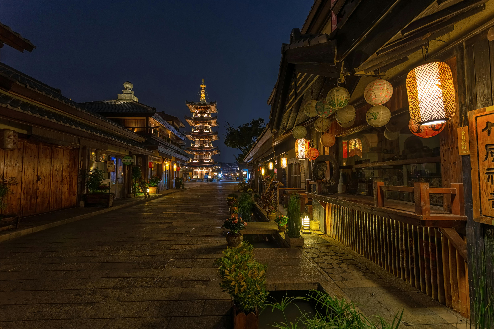
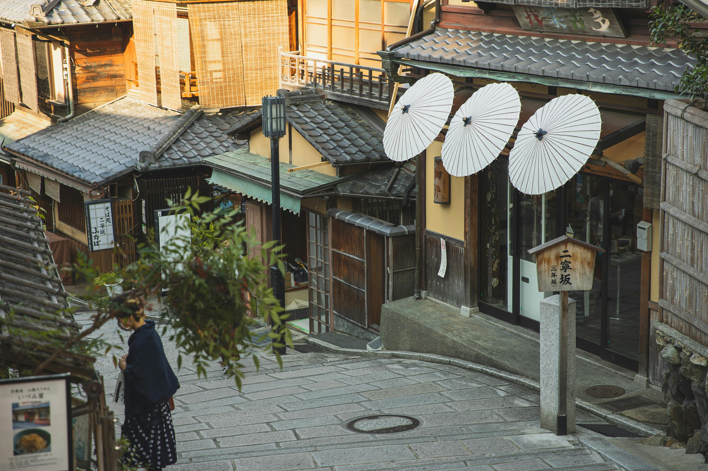
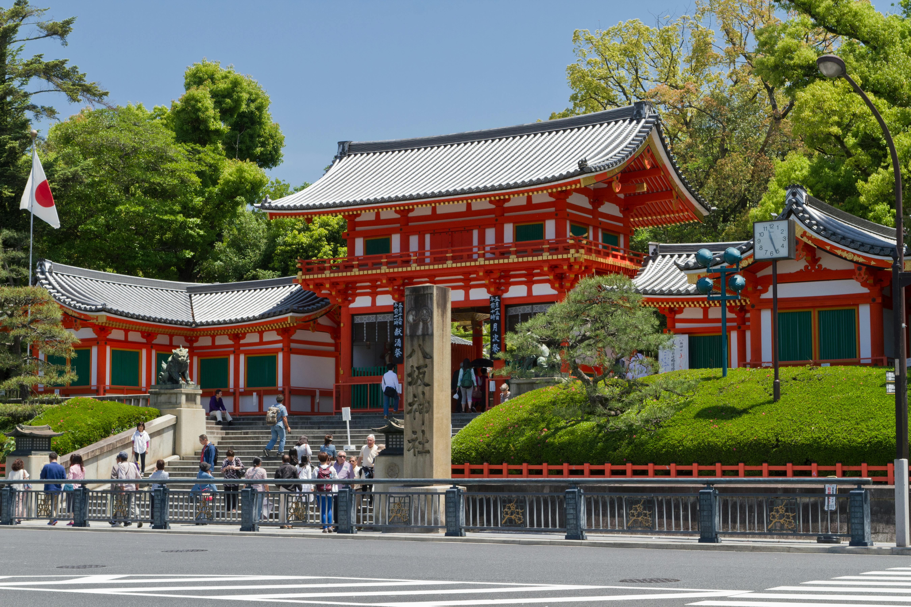
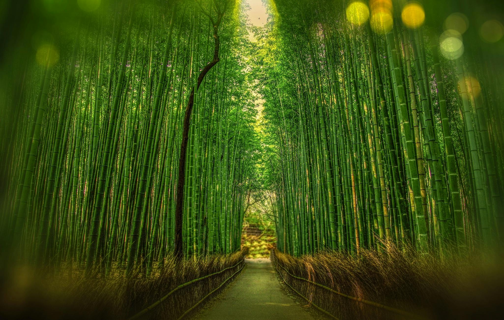
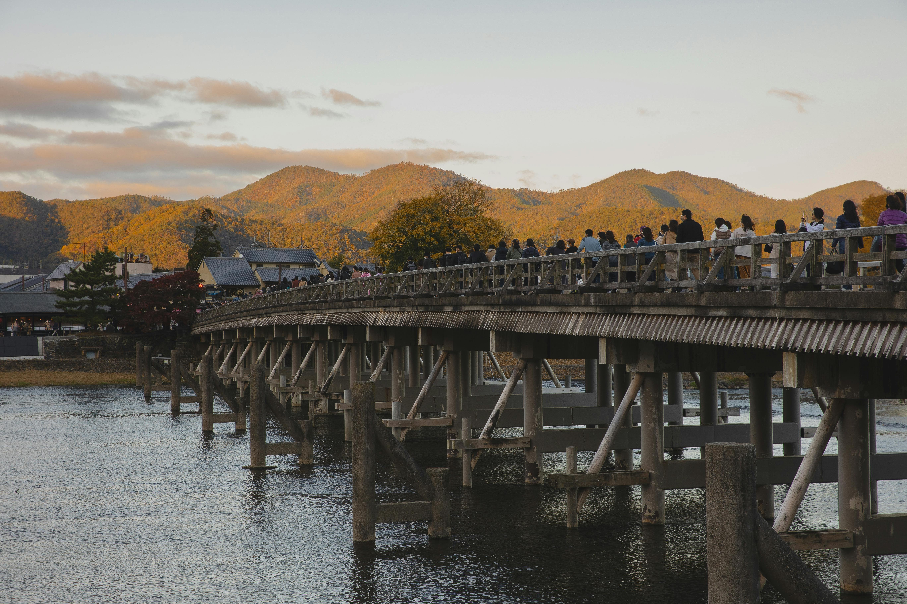
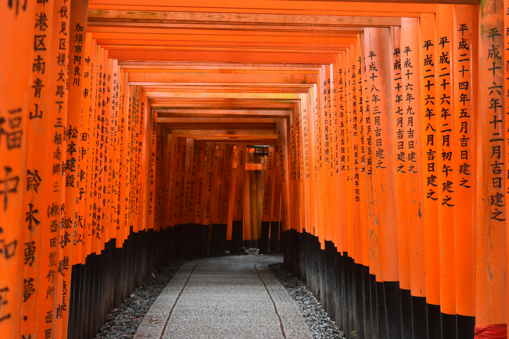

Top 3 Places to Visit in Kyoto
Kyoto is the soul of traditional Japan, and three areas showcase its timeless beauty best:
- Higashiyama & Gion, where lantern-lit streets, wooden teahouses, and historic temples evoke the charm of old Kyoto
- Arashiyama, a peaceful district on the city’s edge, where bamboo groves, riverside views, and Zen temples meet mountain air
- Fushimi Inari Area, home to the iconic shrine path of thousands of red torii gates winding through a sacred forested hillside.
These districts offer a rich first glimpse into Kyoto’s heritage, nature, and spiritual depth—perfect for a first-time journey into Japan’s ancient capital
Higashiyama & Gion
Higashiyama & Gion are Kyoto’s most iconic districts, where the city’s historic soul is preserved in narrow lanes, wooden teahouses, and centuries-old temples. It’s the perfect place to step back in time and experience traditional Japan at its most photogenic.
Popular Activity 1: Visit Kiyomizu-dera & Historic Streets
Start your journey at Kiyomizu-dera, one of Kyoto’s most famous temples, with panoramic city views from its wooden terrace. Afterward, walk through Sannenzaka and Ninenzaka, charming stone-paved streets lined with traditional shops, sweet stands, and souvenir stalls.
This area captures the timeless atmosphere of old Kyoto and is especially beautiful in the morning or at sunset.
Popular Activity 2: Stroll Through Gion District
Just a short walk away, the Gion district is Kyoto’s legendary geisha neighborhood. Stroll along Hanamikoji Street, where preserved machiya (traditional townhouses) now host tea houses and restaurants.
In the early evening, you may even catch a glimpse of a geiko or maiko (Kyoto’s geishas) on their way to an appointment—an unforgettable Kyoto moment.
Popular Activity 3: Discover Yasaka Shrine & Maruyama Park
At the edge of Gion lies Yasaka Shrine, a vibrant spiritual site known for its lanterns and festivals. Next door is Maruyama Park, a peaceful place to relax and enjoy seasonal beauty—especially cherry blossoms in spring.
Together, they offer a calm escape right in the heart of historic Kyoto.
| Activities | Admission Fee (per adult) |
Duration | Access Details |
|---|---|---|---|
| Visit Kiyomizu-dera & Historic Streets | ¥400 (Kiyomizu-dera ) |
1.5-3 hours | 10 minutes walk from Gojo-zaka or Kiyomizu-michi bus stop to Kiyomizu-dera |
| Stroll Through Gion District | Free | 45 min-1.5 hours | 3-5 minutes walk from Gion-Shijo Station & Kyoto-Kawaramachi Station |
| Discover Yasaka Shrine & Maruyama Park | Free | 30 min-1 hour | 5 minutes walk from Gion-Shijo Station to Yasaka Shrine & Maruyama Park |
Arashiyama
Arashiyama is a scenic district on Kyoto’s western edge, known for its natural beauty, peaceful temples, and seasonal charm—especially popular during cherry blossom and autumn foliage seasons.
Popular Activity 1: Walk Through the Bamboo Grove
Step into one of Kyoto’s most iconic landscapes with a stroll through the Arashiyama Bamboo Grove. The towering bamboo stalks create a serene, otherworldly atmosphere perfect for photos and quiet reflection.
The path is short but unforgettable, and it’s especially magical in the early morning when crowds are light.
Popular Activity 2: Visit Tenryu-ji Temple & Garden
Located just beside the bamboo grove, Tenryu-ji is a UNESCO World Heritage Zen temple with stunning landscaped gardens. The temple grounds blend traditional architecture, a large pond, and mountain views—ideal for a quiet cultural break.
Popular Activity 3: Enjoy the View from Togetsukyo Bridge & Riverboat Ride
Cross the iconic Togetsukyo Bridge, where you’ll get sweeping views of the river and surrounding mountains—especially breathtaking during cherry blossom and autumn foliage seasons. The bridge is a symbol of Arashiyama’s natural beauty and charm.
For a unique perspective, board a yakatabune (traditional riverboat) or rowing boat on the Hozugawa River, available near the bridge. It’s a relaxing way to enjoy the scenery and local atmosphere from the water.
Below is a video of when my husband and I had a private yakata-bune experience with sukiyaki, a traditional Japanese meat dish. It was filmed in early March, but if you visit in different seasons, like fall, you can also enjoy the colors of the trees.
| Activities | Admission Fee (per adult) |
Duration | Access Details |
|---|---|---|---|
| Walk Through the Bamboo Grove | Free | 1.5 hours | 10 minutes walk from JR Saga-Arashiyama Station |
| Visit Tenryu-ji Temple & Garden | ¥500 (Tenryu-ji Temple & Garden) |
2-3 hours | 8 minutes walk from JR Saga-Arashiyama Station |
| Enjoy the View from Togetsukyo Bridge & Riverboat Ride | ¥2000-5000 (Riverboat Ride) |
30 min--1 hour | 5 minutes walk from Keifuku Arashiyama Station |
Fushimi Inari Area
Fushimi Inari is one of Kyoto’s most iconic and spiritual destinations, famous for its thousands of vibrant torii gates winding up a sacred mountainside. It’s a place where history, nature, and culture come together in a truly unforgettable way.
Popular Activity 1: Walk the Torii Path at Fushimi Inari Taisha
Explore Fushimi Inari Taisha, Kyoto’s most important Shinto shrine, known for its striking vermilion torii gates that stretch into the forested slopes of Mt. Inari. The path winds past smaller shrines, fox statues, and scenic viewpoints—offering both a cultural and meditative journey.
Popular Activity 2: Visit Tofuku-ji Temple & Zen Garden
A 15-minute walk from Fushimi Inari leads to Tofuku-ji, a grand Zen temple known for its rock gardens, wooden bridges, and vibrant autumn foliage. It’s a peaceful retreat that contrasts beautifully with the busy shrine path.
| Activities | Admission Fee (per adult) |
Duration | Access Details |
|---|---|---|---|
| Walk the Torii Path at Fushimi Inari Taisha | Free | 1-2 hours | Directly outside JR Inari Station |
| Visit Tofuku-ji Temple & Zen Garden | ¥0-1500 (depending on areas you visit and seasons) |
45 min–1 hours | 15 minutes walk from Fushimi Inari Taisha |